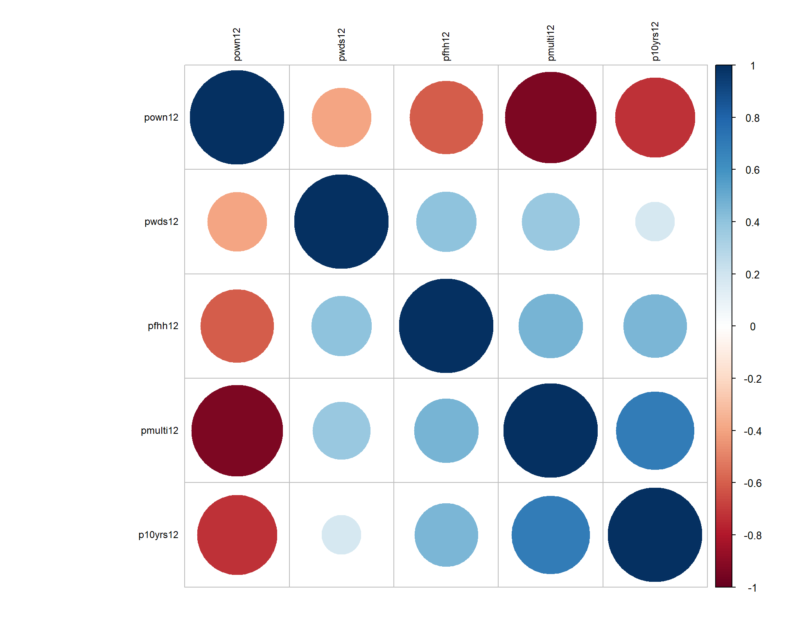

Lab-04 Build a City Dataset
This lab will have you replicate the work you did for the previous lab, but instead of using the Phoenix data you will select a city of your choice to use for this lab, subsequent labs, and the final project.
You want to select a dense city that has a lot of census tracts, so I suggest you select from the 50 largest cities in the US. The Census defines Metropolitan Statistical Areas (MSAs) as “one or more adjacent counties or county equivalents that have at least one urban core area of at least 50,000 population, plus adjacent territory that has a high degree of social and economic integration with the core as measured by commuting ties.” There are currently 384 MSAs in the US.
Wikipedia provides a convenient list of MSAs sorted by size.
Packages
library( geojsonio ) # read shapefiles
library( sp ) # work with shapefiles
library( sf ) # work with shapefiles - simple features format
library( mclust ) # cluster analysis
library( tmap ) # theme maps
library( ggplot2 ) # graphing
library( ggthemes ) # nice formats for ggplots
library( dplyr ) # data wrangling
library( pander ) # formatting RMD tables
library( tidycensus )
library( cartogram ) # spatial maps w/ tract size bias reduction
library( maptools ) # spatial object manipulation Data Source
We will again use Census data made available through the Diversity and Disparities Project. They have created a dataset with 170 variables that have been harmonized from 1970 onward for analysis of changes in tracts over time. We will use a subset of these:
Build Your Rodeo Dataset
The most time-intensive component of most data projects the wrangling necessary to combine data from a variety of sources, cleaning it, transforming variables, and standardizing the data before it is ready for formal models.
We will use clustering to identify coherent neighborhoods within cities, but we first must acquire data, download shapefiles, transform the shapefiles into Dorling cartograms, and merge all of the map and census files together for the analysis.
This lab requires the following steps:
- Select a city (MSA) and identify all counties in the city
- Download a shapefile for your city
- Merge census data to your map file
- Transform the shapefile into a Dorling cartogram for more meaningful maps
At this point you are ready to start clustering census tracts.
I will demonstrate the code that you will use for the lab using Minneapolis. You will need to adapt it for your own city.
Step 1: Select Your MSA
You can select a city from the list of large MSAs.
To get Census data on the city you will first need to identify all of the counties that comprise the MSA. You can look this information up through MSA to FIPS crosswalks provided by the National Bureau for Economic Research (NBER): https://www.nber.org/data/cbsa-fips-county-crosswalk.html
I have added the file to GitHub for ease of access.
crosswalk <- read.csv( "https://raw.githubusercontent.com/DS4PS/cpp-529-master/master/data/cbsatocountycrosswalk.csv", stringsAsFactors=F, colClasses="character" )
# search for citie names by strings, use the ^ anchor for "begins with"
grep( "^CHI", crosswalk$msaname, value=TRUE ) ## [1] "CHICO-PARADISE, CA" "CHICAGO, IL" "CHICAGO, IL"
## [4] "CHICAGO, IL" "CHICAGO, IL" "CHICAGO, IL"
## [7] "CHICAGO, IL" "CHICAGO, IL" "CHICAGO, IL"
## [10] "CHICAGO, IL"## [1] "MINNESOTA" "MINNEAPOLIS-ST. PAUL, MN-WI"
## [3] "MINNESOTA" "MINNESOTA"
## [5] "MINNESOTA" "MINNESOTA"
## [7] "MINNESOTA" "MINNESOTA"
## [9] "MINNEAPOLIS-ST. PAUL, MN-WI" "MINNESOTA"
## [11] "MINNESOTA" "MINNEAPOLIS-ST. PAUL, MN-WI"
## [13] "MINNESOTA" "MINNESOTA"
## [15] "MINNESOTA" "MINNESOTA"
## [17] "MINNEAPOLIS-ST. PAUL, MN-WI" "MINNESOTA"
## [19] "MINNESOTA" "MINNESOTA"
## [21] "MINNESOTA" "MINNESOTA"
## [23] "MINNESOTA" "MINNESOTA"
## [25] "MINNEAPOLIS-ST. PAUL, MN-WI" "MINNESOTA"
## [27] "MINNEAPOLIS-ST. PAUL, MN-WI" "MINNESOTA"
## [29] "MINNESOTA" "MINNESOTA"
## [31] "MINNESOTA" "MINNESOTA"
## [33] "MINNESOTA" "MINNESOTA"
## [35] "MINNESOTA" "MINNESOTA"
## [37] "MINNESOTA" "MINNESOTA"
## [39] "MINNESOTA" "MINNESOTA"
## [41] "MINNESOTA" "MINNESOTA"
## [43] "MINNESOTA" "MINNESOTA"
## [45] "MINNESOTA" "MINNESOTA"
## [47] "MINNESOTA" "MINNESOTA"
## [49] "MINNESOTA" "MINNESOTA"
## [51] "MINNESOTA" "MINNESOTA"
## [53] "MINNESOTA" "MINNESOTA"
## [55] "MINNESOTA" "MINNESOTA"
## [57] "MINNEAPOLIS-ST. PAUL, MN-WI" "MINNESOTA"
## [59] "MINNESOTA" "MINNESOTA"
## [61] "MINNESOTA" "MINNESOTA"
## [63] "MINNESOTA" "MINNEAPOLIS-ST. PAUL, MN-WI"
## [65] "MINNEAPOLIS-ST. PAUL, MN-WI" "MINNESOTA"
## [67] "MINNESOTA" "MINNESOTA"
## [69] "MINNESOTA" "MINNESOTA"
## [71] "MINNESOTA" "MINNESOTA"
## [73] "MINNESOTA" "MINNESOTA"
## [75] "MINNEAPOLIS-ST. PAUL, MN-WI" "MINNESOTA"
## [77] "MINNESOTA" "MINNESOTA"
## [79] "MINNEAPOLIS-ST. PAUL, MN-WI" "MINNESOTA"
## [81] "MINNESOTA" "MINNEAPOLIS-ST. PAUL, MN-WI"
## [83] "MINNEAPOLIS-ST. PAUL, MN-WI"Select all of your county fips. To use them in the TidyCenss package you will need to split the state and county:
Step 2: Download a Shapefile with Population Data
To create a Dorling cartogram we need a shapefile and a population count. We can get both through the Census download that includes simple features.
library( tidycensus )
# census_api_key("YOUR KEY GOES HERE")
# key <- "abc123"
# census_api_key( key )these.msp <- crosswalk$msaname == "MINNEAPOLIS-ST. PAUL, MN-WI"
these.fips <- crosswalk$fipscounty[ these.msp ]
these.fips <- na.omit( these.fips )
head( these.fips ) %>% pander()The Minneapolis-St. Paul Metro spans two states, so we need two Census API calls:
state.fips <- substr( these.fips, 1, 2 )
county.fips <- substr( these.fips, 3, 5 )
cbind( these.fips, state.fips, county.fips ) %>% pander()| these.fips | state.fips | county.fips |
|---|---|---|
| 27003 | 27 | 003 |
| 27019 | 27 | 019 |
| 27025 | 27 | 025 |
| 27037 | 27 | 037 |
| 27053 | 27 | 053 |
| 27059 | 27 | 059 |
| 27123 | 27 | 123 |
| 27139 | 27 | 139 |
| 27141 | 27 | 141 |
| 27163 | 27 | 163 |
| 27171 | 27 | 171 |
| 55093 | 55 | 093 |
| 55109 | 55 | 109 |
msp.pop1 <-
get_acs( geography = "tract", variables = "B01003_001",
state = "27", county = county.fips[state.fips=="27"], geometry = TRUE ) %>%
select( GEOID, estimate ) %>%
rename( POP=estimate )##
|
| | 0%
|
|= | 2%
|
|== | 3%
|
|=== | 5%
|
|==== | 6%
|
|===== | 7%
|
|====== | 8%
|
|======= | 10%
|
|======== | 11%
|
|========= | 13%
|
|========== | 14%
|
|=========== | 15%
|
|=========== | 16%
|
|============= | 18%
|
|============= | 19%
|
|=============== | 21%
|
|=============== | 22%
|
|================= | 24%
|
|================= | 25%
|
|================== | 26%
|
|=================== | 27%
|
|==================== | 29%
|
|===================== | 30%
|
|====================== | 32%
|
|======================= | 33%
|
|========================= | 35%
|
|========================== | 37%
|
|=========================== | 38%
|
|============================ | 40%
|
|============================= | 41%
|
|============================== | 43%
|
|================================ | 45%
|
|================================ | 46%
|
|================================== | 48%
|
|================================== | 49%
|
|=================================== | 51%
|
|==================================== | 52%
|
|===================================== | 53%
|
|====================================== | 54%
|
|======================================== | 57%
|
|========================================= | 59%
|
|========================================== | 60%
|
|============================================ | 62%
|
|============================================= | 64%
|
|============================================== | 65%
|
|=============================================== | 67%
|
|=============================================== | 68%
|
|================================================= | 70%
|
|=================================================== | 73%
|
|===================================================== | 76%
|
|====================================================== | 78%
|
|======================================================= | 79%
|
|======================================================== | 80%
|
|========================================================= | 81%
|
|========================================================== | 83%
|
|=========================================================== | 84%
|
|============================================================ | 86%
|
|============================================================= | 87%
|
|=============================================================== | 89%
|
|================================================================ | 91%
|
|================================================================ | 92%
|
|================================================================== | 94%
|
|================================================================== | 95%
|
|==================================================================== | 97%
|
|==================================================================== | 98%
|
|======================================================================| 100%msp.pop2 <-
get_acs( geography = "tract", variables = "B01003_001",
state = "55", county = county.fips[state.fips=="55"], geometry = TRUE ) %>%
select( GEOID, estimate ) %>%
rename( POP=estimate )##
|
| | 0%
|
|= | 2%
|
|== | 3%
|
|==== | 5%
|
|===== | 7%
|
|====== | 8%
|
|======= | 10%
|
|========= | 12%
|
|========= | 13%
|
|========== | 15%
|
|=========== | 16%
|
|============= | 18%
|
|=============== | 21%
|
|================ | 23%
|
|================== | 26%
|
|=================== | 28%
|
|==================== | 29%
|
|====================== | 31%
|
|======================== | 34%
|
|========================= | 36%
|
|=========================== | 39%
|
|============================= | 42%
|
|============================== | 43%
|
|=============================== | 44%
|
|================================= | 47%
|
|================================== | 48%
|
|================================== | 49%
|
|==================================== | 51%
|
|==================================== | 52%
|
|====================================== | 54%
|
|======================================= | 56%
|
|======================================== | 57%
|
|========================================== | 60%
|
|============================================ | 62%
|
|============================================= | 64%
|
|============================================= | 65%
|
|=============================================== | 67%
|
|================================================= | 70%
|
|================================================== | 72%
|
|=================================================== | 73%
|
|==================================================== | 74%
|
|===================================================== | 75%
|
|====================================================== | 77%
|
|====================================================== | 78%
|
|======================================================== | 79%
|
|======================================================== | 80%
|
|========================================================= | 82%
|
|========================================================== | 83%
|
|============================================================ | 85%
|
|============================================================= | 87%
|
|============================================================== | 88%
|
|=============================================================== | 90%
|
|=============================================================== | 91%
|
|================================================================= | 93%
|
|================================================================== | 95%
|
|=================================================================== | 96%
|
|==================================================================== | 98%
|
|===================================================================== | 98%
|
|======================================================================| 100%Step 3: Add Census Data
URL <- "https://github.com/DS4PS/cpp-529-master/raw/master/data/ltdb_std_2010_sample.rds"
census.dat <- readRDS(gzcon(url( URL )))
# can merge an sf object and data.frame
msp <- merge( msp.pop, census.dat, by.x="GEOID", by.y="tractid" )
# make sure there are no empty polygons
msp <- msp[ ! st_is_empty( msp ) , ]DATA DICTIONARY
| LABEL | VARIABLE |
|---|---|
| tractid | GEOID |
| pnhwht12 | Percent white, non-Hispanic |
| pnhblk12 | Percent black, non-Hispanic |
| phisp12 | Percent Hispanic |
| pntv12 | Percent Native American race |
| pfb12 | Percent foreign born |
| polang12 | Percent speaking other language at home, age 5 plus |
| phs12 | Percent with high school degree or less |
| pcol12 | Percent with 4-year college degree or more |
| punemp12 | Percent unemployed |
| pflabf12 | Percent female labor force participation |
| pprof12 | Percent professional employees |
| pmanuf12 | Percent manufacturing employees |
| pvet12 | Percent veteran |
| psemp12 | Percent self-employed |
| hinc12 | Median HH income, total |
| incpc12 | Per capita income |
| ppov12 | Percent in poverty, total |
| pown12 | Percent owner-occupied units |
| pvac12 | Percent vacant units |
| pmulti12 | Percent multi-family units |
| mrent12 | Median rent |
| mhmval12 | Median home value |
| p30old12 | Percent structures more than 30 years old |
| p10yrs12 | Percent HH in neighborhood 10 years or less |
| p18und12 | Percent 17 and under, total |
| p60up12 | Percent 60 and older, total |
| p75up12 | Percent 75 and older, total |
| pmar12 | Percent currently married, not separated |
| pwds12 | Percent widowed, divorced and separated |
| pfhh12 | Percent female-headed families with children |
Step 4: Transform the Shapefile into A Dorling Cartogram
## [1] "SpatialPolygonsDataFrame"
## attr(,"package")
## [1] "sp"# project map and remove empty tracts
msp.sp <- spTransform( msp.sp, CRS("+init=epsg:3395"))
msp.sp <- msp.sp[ msp.sp$POP != 0 & (! is.na( msp.sp$POP )) , ]
# convert census tract polygons to dorling cartogram
# no idea why k=0.03 works, but it does - default is k=5
msp.sp$pop.w <- msp.sp$POP / 9000 # max(msp.sp$POP) # standardizes it to max of 1.5
msp_dorling <- cartogram_dorling( x=msp.sp, weight="pop.w", k=0.05 )
plot( msp_dorling )
tm_shape( msp_dorling ) +
tm_polygons( size="POP", col="hinc12", n=7, style="quantile", palette="Spectral" ) 
Improve the aestetics with a bounding box. I use the locator() function to get location.
tm_shape( msp_dorling ) +
tm_polygons( size="POP", col="hinc12", n=7, style="quantile", palette="Spectral" ) # user-defined bounding box to move slocer to subjects
bb <- st_bbox( c( xmin = -10451823, xmax = -10324525,
ymax = 5639769, ymin = 5491665 ),
crs = st_crs("+init=epsg:3395"))
tm_shape( msp_dorling, bbox=bb ) +
tm_polygons( col="hinc12", n=10, style="quantile", palette="Spectral" ) +
tm_layout( "Dorling Cartogram", title.position=c("right","top") )Clustering
We will use the same set of variables as last week. The data is transformed into z-score so that they are all on similar scales.
keep.these <- c("pnhwht12", "pnhblk12", "phisp12", "pntv12", "pfb12", "polang12",
"phs12", "pcol12", "punemp12", "pflabf12", "pprof12", "pmanuf12",
"pvet12", "psemp12", "hinc12", "incpc12", "ppov12", "pown12",
"pvac12", "pmulti12", "mrent12", "mhmval12", "p30old12", "p10yrs12",
"p18und12", "p60up12", "p75up12", "pmar12", "pwds12", "pfhh12")
d1 <- msp_dorling@data
d2 <- select( d1, keep.these )
d3 <- apply( d2, 2, scale )
head( d3[,1:6] ) %>% pander()| pnhwht12 | pnhblk12 | phisp12 | pntv12 | pfb12 | polang12 |
|---|---|---|---|---|---|
| 0.9411 | -0.5724 | -0.7285 | -0.4538 | -1.025 | -0.9737 |
| 0.9847 | -0.7166 | -0.6991 | -0.137 | -1.009 | -1.072 |
| 1.004 | -0.7088 | -0.7173 | -0.004358 | -0.8534 | -1.046 |
| 0.8184 | -0.7244 | -0.7215 | -0.1075 | -0.9287 | -0.4711 |
| 0.8448 | -0.7244 | -0.6332 | 1.093 | -1.117 | -1.004 |
| 0.9798 | -0.7097 | -0.7775 | -0.4538 | -0.8511 | -0.7984 |
Prepare Data for Clustering
We transform all of the variables to z scorse so they are on the same scale while clustering. This ensures that each census variable has equal weight. Z-scores typically range from about -3 to +3 with a mean of zero.
keep.these <- c("pnhwht12", "pnhblk12", "phisp12", "pntv12", "pfb12", "polang12",
"phs12", "pcol12", "punemp12", "pflabf12", "pprof12", "pmanuf12",
"pvet12", "psemp12", "hinc12", "incpc12", "ppov12", "pown12",
"pvac12", "pmulti12", "mrent12", "mhmval12", "p30old12", "p10yrs12",
"p18und12", "p60up12", "p75up12", "pmar12", "pwds12", "pfhh12")
d2 <- select( d1, keep.these )
d3 <- apply( d2, 2, scale )
head( d3[,1:6] ) %>% pander()| pnhwht12 | pnhblk12 | phisp12 | pntv12 | pfb12 | polang12 |
|---|---|---|---|---|---|
| 0.9411 | -0.5724 | -0.7285 | -0.4538 | -1.025 | -0.9737 |
| 0.9847 | -0.7166 | -0.6991 | -0.137 | -1.009 | -1.072 |
| 1.004 | -0.7088 | -0.7173 | -0.004358 | -0.8534 | -1.046 |
| 0.8184 | -0.7244 | -0.7215 | -0.1075 | -0.9287 | -0.4711 |
| 0.8448 | -0.7244 | -0.6332 | 1.093 | -1.117 | -1.004 |
| 0.9798 | -0.7097 | -0.7775 | -0.4538 | -0.8511 | -0.7984 |
Perform Cluster Analysis
For more details on cluster analysis visit the mclust tutorial.
# library( mclust )
set.seed( 1234 )
fit <- Mclust( d3 )
msp_dorling$cluster <- as.factor( fit$classification )
summary( fit )## ----------------------------------------------------
## Gaussian finite mixture model fitted by EM algorithm
## ----------------------------------------------------
##
## Mclust VVE (ellipsoidal, equal orientation) model with 7 components:
##
## log-likelihood n df BIC ICL
## -15370.41 771 861 -36464.47 -36533.72
##
## Clustering table:
## 1 2 3 4 5 6 7
## 74 151 112 237 89 63 45Some visuals of model fit statistics (doesn’t work well with a lot of variables):
Identifying Neighborhood Clusters
Build the charts to compare census characteristics across the groups.
df.pct <- sapply( d2, ntile, 100 )
d4 <- as.data.frame( df.pct )
d4$cluster <- as.factor( paste0("GROUP-",fit$classification) )
num.groups <- length( unique( fit$classification ) )
stats <-
d4 %>%
group_by( cluster ) %>%
summarise_each( funs(mean) )
t <- data.frame( t(stats), stringsAsFactors=F )
names(t) <- paste0( "GROUP.", 1:num.groups )
t <- t[-1,]
for( i in 1:num.groups )
{
z <- t[,i]
plot( rep(1,30), 1:30, bty="n", xlim=c(-75,100),
type="n", xaxt="n", yaxt="n",
xlab="Percentile", ylab="",
main=paste("GROUP",i) )
abline( v=seq(0,100,25), lty=3, lwd=1.5, col="gray90" )
segments( y0=1:30, x0=0, x1=100, col="gray70", lwd=2 )
text( -0.2, 1:30, data.dictionary$VARIABLE[-1], cex=0.85, pos=2 )
points( z, 1:30, pch=19, col="firebrick", cex=1.5 )
axis( side=1, at=c(0,50,100), col.axis="gray", col="gray" )
}You are now ready to identify meaningful labels for your clusters!
Variable Selection for Clustering
We can compare the model created with reliable measures of community stability that were identified from the first lab, and compare this model to one created from three census variables, and one created from three reliable indices of neighborhood stability generated from Lab 01:
Neighborhood transitivity (Cronbach’s Alpha 0.8)
- % homes that are owner occupied
- % of homes that are multi-family
- % of residents that have been in the neighborhood under 10 years
- % of households currently not married
- % of households led by single female
Neighborhood Diversity (Cronbach’s Alpha 0.78)
- % white
- % black
- % Hispanic
- % foreign born
- % speaking another language at home
Human Capital (Cronbach’s Alpha 0.93)
- % adults with college degree
- % adults with a high school degree or less
- % employed in professional industries
- Median household income + Per capita income (these give the high score, but cheating a little)
- Median home value (drops alpha to 0.92)
You will create each index by adding the component variables together.
Note that all of the variables are on very different scales, which is problematic for index construction. For example, adding household income (tens of thousands of dollars) to household size (one to a dozen people) would not make much sense because the variance of income completely eclipses the variance of household size.
So first we would want to standardize the variable scales. We could put all variables on a scale of 0 to 1 or 1 to 100, for example. Alternatively we could normalize all variables by converting them to the standard-normal scale (subtract the mean and divide by the standard deviation so everything is centered at zero and has a range of approximately -3 to +3).
Recall that we have already converted variables to z-scores in previous steps with the scale() function.
## pnhwht12 pnhblk12 phisp12
## Min. : 4.28 Min. : 0.000 Min. : 0.000
## 1st Qu.:70.17 1st Qu.: 1.065 1st Qu.: 1.620
## Median :82.95 Median : 4.070 Median : 3.470
## Mean :76.53 Mean : 8.389 Mean : 5.899
## 3rd Qu.:90.83 3rd Qu.:10.830 3rd Qu.: 7.365
## Max. :99.32 Max. :81.150 Max. :50.230## pnhwht12 pnhblk12 phisp12
## Min. :-3.5340 Min. :-0.7244 Min. :-0.8266
## 1st Qu.:-0.3113 1st Qu.:-0.6324 1st Qu.:-0.5996
## Median : 0.3141 Median :-0.3730 Median :-0.3404
## Mean : 0.0000 Mean : 0.0000 Mean : 0.0000
## 3rd Qu.: 0.6993 3rd Qu.: 0.2107 3rd Qu.: 0.2053
## Max. : 1.1148 Max. : 6.2825 Max. : 6.2113Also not that in order to add variables together we need to make sure that they all have the same cardinality, i.e. positive scores should represent high scores on each scale, negative scores should represent low scores.
We can determine this by looking at the correlation structure and checking to make sure we have all positive correlations:
Transitivity Index
library( corrplot )
d3 <- as.data.frame(d3)
df.dim1 <- dplyr::select( d3, pown12, pmulti12, p10yrs12, pwds12, pfhh12 )
corrplot( cor(df.dim1, use="complete.obs"),
order = "hclust", tl.col='black', tl.cex=.75 ) 
We can see that home ownership goes in the opposite direction as all of the other variables. We can fix it by flipping the sign of home ownership, but note that this means that high on the “community stability” scale now means low home ownership, higher rates of transitivity, higher rates of multi-family homes. So we would have to rename the variable to “community instability”.
Alternatively, we can flip the signs of the other variables so high is good on the scale (which is slightly easier to interpret).
# flip the signs
df.dim1$pmulti12 <- - df.dim1$pmulti12
df.dim1$p10yrs12 <- - df.dim1$p10yrs12
df.dim1$pwds12 <- - df.dim1$pwds12
df.dim1$pfhh12 <- - df.dim1$pfhh12
corrplot( cor(df.dim1, use="complete.obs"),
order = "hclust", tl.col='black', tl.cex=.75 ) Diversity Index
Need to flip percent white - low proportion of white population corresponds with higher levels of diversity.
df.dim2 <- d3[ c("pnhwht12", "pnhblk12", "phisp12", "pfb12", "polang12") ]
# Check direction
# Need to flip percent white
corrplot( cor(df.dim2, use="complete.obs"),
order = "hclust", tl.col='black', tl.cex=.75 ) Human Capital
df.dim3 <- select( d3, pcol12, phs12, pprof12, hinc12, mhmval12 )
# Check direction
# Need to flip high school graduation rates
corrplot( cor(df.dim3, use="complete.obs"),
order = "hclust", tl.col='black', tl.cex=.75 ) 
Construct the new indices:
dim1 <- d3$pown12 - d3$pmulti12 - d3$p10yrs12 - d3$pwds12 - d3$pfhh12
dim2 <- - d3$pnhwht12 + d3$pnhblk12 + d3$phisp12 + d3$pfb12 + d3$polang12
dim3 <- d3$pcol12 - d3$phs12 + d3$pprof12 + d3$hinc12 + d3$mhmval12
df.nhood.metrics <- data.frame( dim1, dim2, dim3 )
summary( df.nhood.metrics )## dim1 dim2 dim3
## Min. :-13.0329 Min. :-4.801 Min. :-9.5023
## 1st Qu.: -2.6877 1st Qu.:-3.012 1st Qu.:-3.3283
## Median : 0.7012 Median :-1.396 Median :-0.2895
## Mean : 0.0000 Mean : 0.000 Mean : 0.0000
## 3rd Qu.: 3.1012 3rd Qu.: 1.547 3rd Qu.: 2.7397
## Max. : 7.1218 Max. :18.829 Max. :17.3346corrplot( cor( df.nhood.metrics, use="complete.obs" ),
order = "hclust", tl.col='black', tl.cex=.75 ) # plot( dim1, dim2, pch=19, col=gray(0.5,0.5), cex=1.5 )
# plot( dim1, dim3, pch=19, col=gray(0.5,0.5), cex=1.5 )
# plot( dim2, dim3, pch=19, col=gray(0.5,0.5), cex=1.5 )I arbitrarily selected three census variables to compare methods. Here we are using % of population 18 and under, % of female labor force participation, and household income.
## ----------------------------------------------------
## Gaussian finite mixture model fitted by EM algorithm
## ----------------------------------------------------
##
## Mclust VVI (diagonal, varying volume and shape) model with 6 components:
##
## log-likelihood n df BIC ICL
## -5818.13 771 41 -11908.82 -12246.39
##
## Clustering table:
## 1 2 3 4 5 6
## 88 137 238 124 125 59msp_dorling$cluster2 <- as.factor( fit2$classification )
# cluster with dataset of three census variables
d33 <- data.frame( d3$p18und12, d3$pflabf12, d3$hinc12 )
fit3 <- Mclust( d33 )
summary( fit3 )## ----------------------------------------------------
## Gaussian finite mixture model fitted by EM algorithm
## ----------------------------------------------------
##
## Mclust VEV (ellipsoidal, equal shape) model with 3 components:
##
## log-likelihood n df BIC ICL
## -3046.201 771 25 -6258.594 -6747.571
##
## Clustering table:
## 1 2 3
## 187 263 321msp_dorling$cluster3 <- as.factor( fit3$classification )
tmap_mode("plot")
tmap_style("cobalt")
tm1 <-
tm_shape( msp_dorling, bbox=bb ) +
tm_polygons( col="cluster", palette="Accent" )
tm2 <-
tm_shape( msp_dorling, bbox=bb ) +
tm_polygons( col="cluster2", palette="Accent" )
tm3 <-
tm_shape( msp_dorling, bbox=bb ) +
tm_polygons( col="cluster3", palette="Accent" )
tmap_arrange( tm1, tm2, tm3 )This function does not work well using the model with 30 census variables because the plots are so small, but when you plot the model results from the clustering procedure is will show the relationship between each variable, and color-code each group. This helps you visualize how each set of variables is contributing the the clusters that were identified.
Recall that similar to how regression models are trying to select lines that minimize the residual errors in the model, clustering tries to select groups (assign tracts to groups) in a way that maximizes the overall distance between group centroids.
You can see here that the three indices we created do a better job of creating meaningful groups that the three census variables. When selecting variables for your model it is better to have independent measures - highly-correlated input variables will be explaining the same variance in your populations, and thus provide redundant information that is not useful for identifying groups.
Lab Instructions
PART 1:
Select a city, build your dataset, and cluster the neighborhoods in your city using the same techniques we used last week.
Show the clusters and the cluster demographics for the new city.
Report the labels you have assigned to each group.
PART 2:
Part 2 explores how the input data impacts your clusters.
You will use your full model with 30 census variables as the reference point, then do the following:
Question 1:
Compare that set of groups to the groups identified by the model using only the three indices above. Are they identifying the same groups? Which group is missing?
Question 2:
Select three census variables from the full list of 30, and create a new clustering model. How many groups are generated? Are they similar groups to the full model? Are our inferences significantly different if we have a limited amount of data to draw from?
Report your three variables and describe the groups that are identified.
You can use the following to create data dictionaries to provide informative labels to the group percentile plots:
# use dput( data.dictionary ) to create reproducible data frames for RMD files
data.dictionary <-
structure(list(LABEL = c("pnhwht12", "pnhblk12", "phisp12",
"pntv12", "pfb12", "polang12", "phs12", "pcol12", "punemp12",
"pflabf12", "pprof12", "pmanuf12", "pvet12", "psemp12", "hinc12",
"incpc12", "ppov12", "pown12", "pvac12", "pmulti12", "mrent12",
"mhmval12", "p30old12", "p10yrs12", "p18und12", "p60up12", "p75up12",
"pmar12", "pwds12", "pfhh12"), VARIABLE = c("Percent white, non-Hispanic",
"Percent black, non-Hispanic", "Percent Hispanic", "Percent Native American race",
"Percent foreign born", "Percent speaking other language at home, age 5 plus",
"Percent with high school degree or less", "Percent with 4-year college degree or more",
"Percent unemployed", "Percent female labor force participation",
"Percent professional employees", "Percent manufacturing employees",
"Percent veteran", "Percent self-employed", "Median HH income, total",
"Per capita income", "Percent in poverty, total", "Percent owner-occupied units",
"Percent vacant units", "Percent multi-family units", "Median rent",
"Median home value", "Percent structures more than 30 years old",
"Percent HH in neighborhood 10 years or less", "Percent 17 and under, total",
"Percent 60 and older, total", "Percent 75 and older, total",
"Percent currently married, not separated", "Percent widowed, divorced and separated",
"Percent female-headed families with children")), class = "data.frame", row.names = c(NA,
-30L))
# list variables for clustering
use.these <- c("pnhwht12", "pnhblk12", "phisp12", "pntv12", "pfb12", "polang12",
"phs12", "pcol12", "punemp12", "pflabf12", "pprof12", "pmanuf12",
"pvet12", "psemp12", "hinc12", "incpc12", "ppov12", "pown12",
"pvac12", "pmulti12", "mrent12", "mhmval12", "p30old12", "p10yrs12",
"p18und12", "p60up12", "p75up12", "pmar12", "pwds12", "pfhh12")
dd.cluster1 <- data.dictionary[ data.dictionary$LABEL %in% use.these , ]
# cluster 2
LABEL <- c("dim1","dim2","dim3")
VARIABLE <- c("Neighborhood transitivity","Neighborhood diversity","Human capital")
dd.cluster2 <- data.frame( LABEL, VARIABLE )
# cluster 3 - update with your variables
use.these <- c("pnhwhtxx", "pnhblkxx", "phispxx")
dd.cluster3 <- data.dictionary[ data.dictionary$LABEL %in% use.these , ]Reflection (not graded, but please answer):
Reflect on how the data we use in these models defines how we are defining and describing the neighborhoods (groups) within these models?
Are these clusters valid constructs? Do we believe that they are accurately describing a concrete reality about the world? Would knowing which group that a tract is part of help us predict something about the tract, such as outcomes that children would experience living there, or how the tract might change over time?
How do we know which is the right set of groups to use?
Submission Instructions
After you have completed your lab submit via Canvas. Login to the ASU portal at http://canvas.asu.edu and navigate to the assignments tab in the course repository. Upload your RMD and your HTML files to the appropriate lab submission link. Or else use the link from the Schedule page.
Remember to name your files according to the convention: Lab-##-LastName.xxx